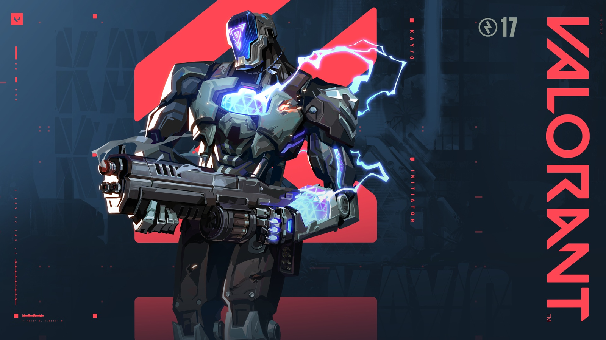
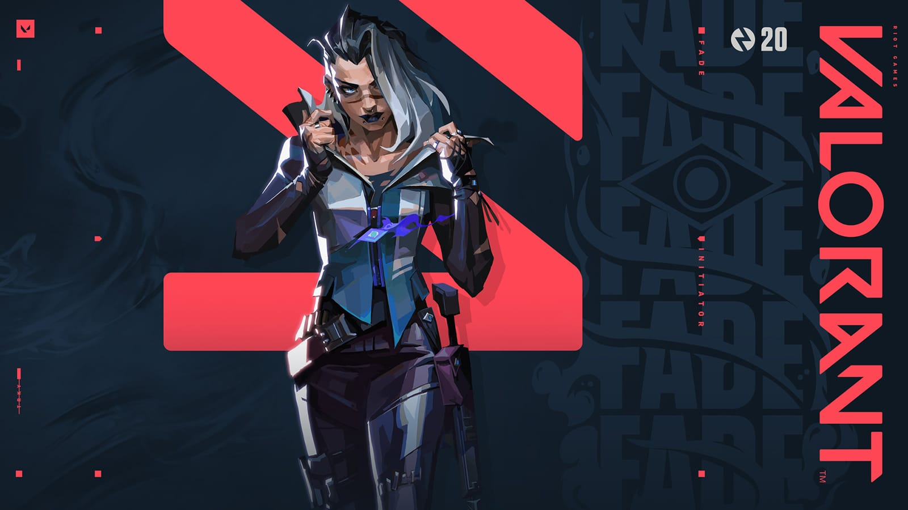

VALORANT
Recommended Controller Agents for Beginners
Sova

Sova is considered beginner-friendly because his abilities focus on providing information and supporting the team, which allows new players to contribute without needing aggressive gunplay.
His kit is relatively straightforward to use for its core function, such as scouting with an Owl Drone or using a Recon Bolt to reveal enemy locations, and his Ultimate, Hunter's Fury, can be used for easy damage from a safe distance. While complex lineups exist, new players can be effective by focusing on the basics of his abilities and learning a few simple arrows over time.
KAY/O

KAY/O is considered beginner-friendly because his abilities are straightforward and similar to other tactical shooters, making him easy to grasp for new players
His role is to support the team, which allows new players to learn the game by following more experienced teammates. His kit provides information and denies enemy utility, which are fundamental functions for an Initiator.
Clove

Fade is beginner-friendly because her abilities allow players to contribute to their team by providing information without relying heavily on aim, which is a common challenge for new players in first-person shooters like VALORANT.
Her kit provides a straightforward way to gather intelligence and apply pressure, helping new players understand enemy positions and learn how to support their team through utility rather than raw gun skill.